Classes
A classe escolhe-se ao criar o personagem e não pode ser trocada.
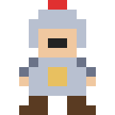
Cavaleiro
Vida 140 · Veloc. 165
Redemoinho (Q): Gira a lâmina e fere tudo à volta.
Tanque corpo-a-corpo. Muita vida, golpes pesados e 15% menos dano recebido.
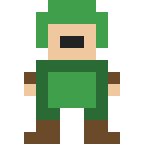
Arqueiro
Vida 95 · Veloc. 195
Chuva de Flechas (Q): Dispara 14 flechas em todas as direções.
Ataca de longe. Rápido mas frágil.
Mago
Vida 80 · Veloc. 175
Nova Gélida (Q): Explosão de gelo que fere e atrasa todos.
Magia à distância com efeitos especiais.
Armas
Cada arma tem uma habilidade própria (E) e melhora na Bigorna até +12.
Cavaleiro
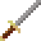
Espada de Ferro
Rápida e equilibrada.
Dano 10 · 2.9/s · inicial
Inicial
Investida (E, 6s): Lança-te em frente ferindo tudo no caminho.
★1 2 investidas · ★2 3 investidas · ★3 4 investidas
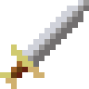
Machado de Guerra
Lento, arco enorme.
Dano 34 · 1.4/s · ¢600
Nv 6
Terremoto (E, 8s): Abala o chão: dano em área e atordoa.
★1 2 ondas de choque · ★2 3 ondas de choque · ★3 4 ondas de choque
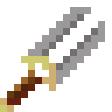
Lança do Caçador
Alcance muito longo.
Dano 20 · 2.4/s · ¢2700
Nv 12 + raid Floresta Sombria
Lança Arremessada (E, 5s): Atira a lança, atravessa tudo.
★1 3 lanças em leque · ★2 5 lanças em leque · ★3 7 lanças em leque
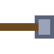
Martelo do Trovão
Pesadíssimo, grande recuo.
Dano 49 · 1.1/s · ¢10500
Nv 20 + raid Cavernas Douradas
Trovão (E, 9s): Raios caem nos 4 inimigos mais próximos.
★1 6 raios · ★2 8 raios · ★3 12 raios
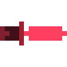
Lâmina Vampírica
Muito rápida, rouba vida.
Dano 34 · 3.8/s · ¢30000
Nv 28 + raid Castelo Maldito
Sede de Sangue (E, 12s): 6s: ataques +60% rápidos e roubo de vida.
★1 8s de duração · ★2 10s de duração · ★3 12s de duração
Arqueiro
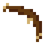
Arco Curto
Flecha rápida e certeira.
Dano 10 · 2.6/s · inicial
Inicial
Salva Rápida (E, 6s): 7 flechas em rápida sequência.
★1 10 flechas · ★2 14 flechas · ★3 20 flechas
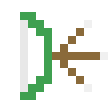
Arco Triplo
3 flechas em leque.
Dano 9 · 1.8/s · ¢600
Nv 6
Leque (E, 7s): 11 flechas num leque gigante.
★1 15 flechas no leque · ★2 19 flechas no leque · ★3 23 flechas no leque
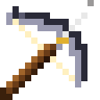
Besta Pesada
Lenta, atravessa inimigos.
Dano 36 · 1.1/s · ¢2700
Nv 12 + raid Floresta Sombria
Virote Perfurante (E, 7s): Virote enorme que atravessa tudo.
★1 2 virotes · ★2 3 virotes · ★3 5 virotes
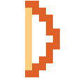
Arco Ígneo
Flechas que queimam.
Dano 30 · 2.4/s · ¢10500
Nv 20 + raid Cavernas Douradas
Flecha Explosiva (E, 8s): Explode em área e incendeia.
★1 explosão maior · ★2 2 flechas de fogo · ★3 3 flechas, explosão enorme
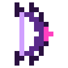
Arco Sombrio
Duas flechas, cadência alta.
Dano 14 · 3.3/s · ¢30000
Nv 28 + raid Castelo Maldito
Armadilha (E, 9s): Coloca uma armadilha no cursor.
★1 2 armadilhas · ★2 3 armadilhas · ★3 5 armadilhas
Mago
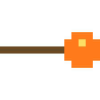
Cajado de Fogo
Bola de fogo explosiva que deixa chamas no chão.
Dano 18 · 1.7/s · inicial
Inicial
Meteoro (E, 8s): Chama um meteoro que incendeia o chão.
★1 2 meteoros · ★2 3 meteoros · ★3 CHUVA DE METEOROS
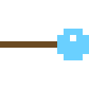
Cajado de Gelo
Congela e deixa um rasto gelado.
Dano 21 · 2.5/s · ¢600
Nv 6
Prisão de Gelo (E, 9s): Prende tudo em cristais de gelo.
★1 área maior · ★2 área e gelo maiores · ★3 nova gigante (5s de gelo)
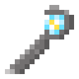
Cajado de Raios
Raio com faíscas que salta entre inimigos.
Dano 17 · 2.0/s · ¢2700
Nv 12 + raid Floresta Sombria
Tempestade (E, 10s): 7 raios caem sobre os inimigos.
★1 10 raios · ★2 14 raios · ★3 20 raios
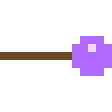
Cajado Arcano
Orbes estelares que perseguem o alvo.
Dano 30 · 2.9/s · ¢10500
Nv 20 + raid Cavernas Douradas
Escudo Arcano (E, 12s): 4s de invulnerabilidade.
★1 escudo de 5s · ★2 escudo de 6s · ★3 escudo de 8s
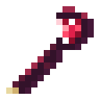
Cajado Sombrio
Atravessa, rouba vida e liberta almas.
Dano 46 · 2.0/s · ¢30000
Nv 28 + raid Castelo Maldito
Orbes Sombrios (E, 11s): 6s: orbes giram e bloqueiam tiros.
★1 orbes durante 8s · ★2 orbes durante 10s · ★3 orbes durante 13s
Fusão
Desbloqueia no nível 20. 5 armas iguais (ou 5 peças iguais de equipamento) dão 1 com mais uma estrela, até 3★.
Cada estrela melhora também a habilidade (E) da arma; os efeitos aparecem em cada arma, em Armas.
| Estrelas | Arma: dano | Arma: vel. ataque | Equipamento: bónus |
|---|---|---|---|
| 1★ | ×1.40 | +3% | ×1.15 |
| 2★ | ×1.90 | +6% | ×1.30 |
| 3★ (MAX) | ×2.50 | +9% | ×1.50 |
Equipamento
Guarda-se na Mochila (30 lugares) e equipa-se no ecrã Personagem.
| Peça | Comum | Raro | Épico | Lendário | Mítico |
|---|---|---|---|---|---|
| Capacete | Capuz de Couro | Elmo de Ferro | 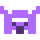 Elmo Rúnico | Coroa Ancestral | 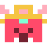 Coroa Divina |
| Armadura | 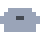 Túnica Simples | Peitoral de Aço | Armadura Rúnica | 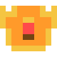 Armadura Ancestral | Armadura Divina |
| Botas | 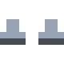 Sapatos Gastos | Botas de Couro | 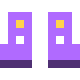 Botas Rúnicas | 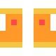 Botas Ancestrais | 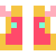 Botas Divinas |
| Amuleto | 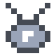 Amuleto de Osso | Colar de Prata | 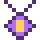 Talismã Rúnico | 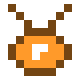 Talismã Ancestral | 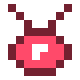 Talismã Divino |
Capacete e Armadura dão Vida, Botas dão Velocidade, Amuleto dá Dano. Cada raridade acrescenta um bónus aleatório; Lendário e Mítico podem ter efeito especial.
Encantamentos e Bigorna
Refinar (equipamento) até +10, +6% por nível. Chances: +1: 100% · +2: 90% · +3: 80% · +4: 70% · +5: 60% · +6: 50% · +7: 40% · +8: 30% · +9: 22% · +10: 15%.
Encantar especial: Ígneo, Gélido, Vampírico, Letal, Próspero, Sábio, Protetor, Poderoso.
Bigorna (armas) até +12, +12% de dano por nível. Chances: +1: 100% · +2: 95% · +3: 90% · +4: 80% · +5: 70% · +6: 60% · +7: 50% · +8: 40% · +9: 30% · +10: 22% · +11: 15% · +12: 10%.
Progressão
Nível infinito; cada nível dá +4 de vida, +1% de dano, 3 pontos de atributo e um baú. A cada 10 níveis ganhas +10 diamantes ◆ e o baú é dourado.
| Atributo | Efeito por ponto |
|---|---|
| Vitalidade | +14 vida |
| Força | +2% dano |
| Agilidade | +1.2% velocidade |
| Perícia | +1.2% vel. de ataque |
Farm e Raids
Farm: ondas infinitas, boss a cada 5. Raids: 4 ondas + boss, muito difíceis, com itens garantidos.
| Dificuldade | Vida | Dano | Ouro |
|---|---|---|---|
| Fácil | ×8 | ×2.3 | ×1 |
| Normal | ×14 | ×3.1 | ×2 |
| Difícil | ×24 | ×4.1 | ×4 |
| Pesadelo | ×40 | ×5.5 | ×8 |
| Inferno | ×65 | ×7.5 | ×15 |
Mapas e bosses
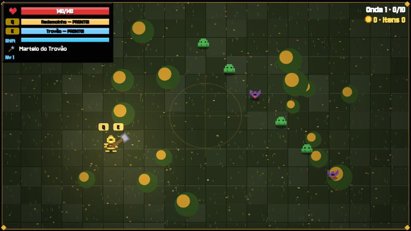
Floresta Sombria
Limpa a floresta e enfrenta o Ceifador.
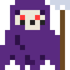
anel de projéteis, investida, leque de tiros
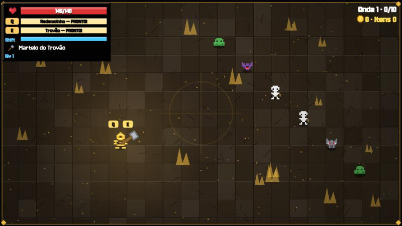
Cavernas Douradas
Esqueletos e lobos guardam o Golem.
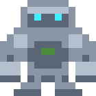
pancada em área, anel de projéteis, investida
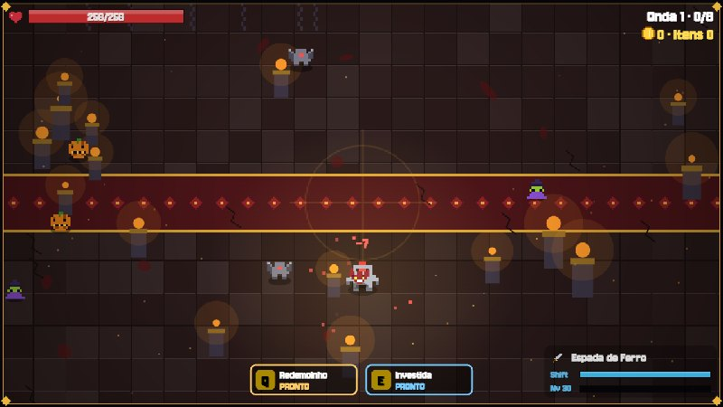
Castelo Maldito
O covil do Dragão Rubro.
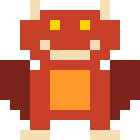
sopro em cone, chuva de meteoros, investida
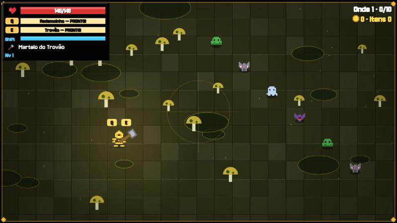
Pântano Tóxico
Fantasmas e lobos servem a Rainha.
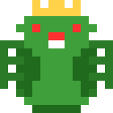
leque de tiros, invoca lacaios, espiral de tiros, investida
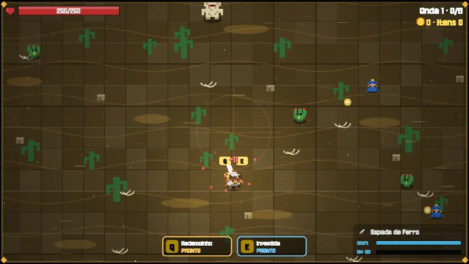
Deserto Ardente
O Faraó desperta das areias.
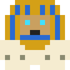
chuva de meteoros, espiral de tiros, pancada em área, sopro em cone
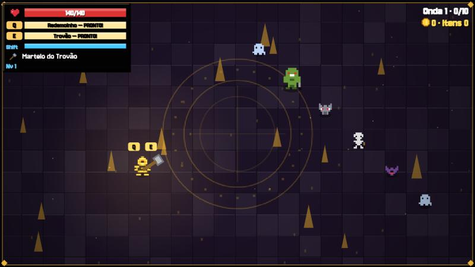
Abismo Final
O Rei Demónio espera no fundo.
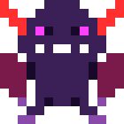
teletransporte, espiral de tiros, chuva de meteoros, investida, invoca lacaios, pancada em área
Inimigos
Slime
persegue
Vida base 3 · ¢3
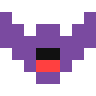
Morcego
voo errático, rápido
Vida base 2 · ¢4
Esqueleto arqueiro
mantém distância e dispara
Vida base 4 · ¢6
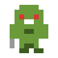
Bruto
lento, muita vida e muito dano
Vida base 10 · ¢12
Lobo
muito rápido
Vida base 3 · ¢5
Fantasma
mantém distância e dispara orbes
Vida base 4 · ¢7
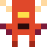
Diabrete
atira bolas de fogo rápidas
Vida base 5 · ¢8
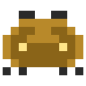
Escaravelho
prepara-se (!) e investe em linha reta
Vida base 9 · ¢14
Cogumelo
explode ao morrer, deixando uma área tóxica
Vida base 8 · ¢9
Skins
Skin base grátis, 1.ª extra ¢5.000, as seguintes 20, 40 e 60 diamantes ◆.
Cavaleiro
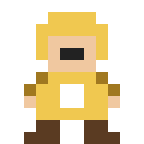
Paladino Dourado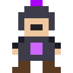
Cavaleiro Sombrio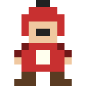
Lorde Carmesim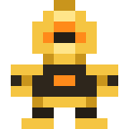
Guardião DouradoArqueiro
Mago
Sem resultados.